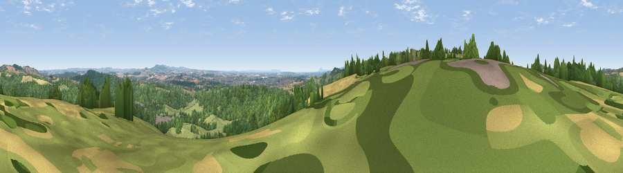

Viewpoint near Wolverley
#10073 in England · top 14% of its area beats it · near WolverleyWhere it is
The exact computed spot (SO 80275 80725). Click the marker for map links.
The view, rendered

A 360° render of this exact spot computed from the terrain model, tree cover and land cover — summer colours, afternoon light, calibrated against photographs of famous viewpoints. Real trees, hedges and buildings will differ in detail.
The panorama
Grey silhouette: terrain skyline in each direction (720 bearings, Earth curvature and refraction included). Dashed green: skyline with trees (+15 m) and buildings (+8 m) as obstacles. Blue strip: how far the ground is visible on each bearing.
Where the view opens
Wedge length = distance to the farthest visible ground on that bearing (vegetation-aware). Rings at 10, 25 and 50 km.
What fills the view
48% woodland · 33% grassland · 15% cropland · 4% built-up
Angular shares of the visible panorama (visual magnitude), not map area. Landscape diversity 0.49 (0–1 Shannon).
Key numbers
More beautiful places nearby
The staircase of upgrades: each row has a higher view potential than everything closer. Driving times are estimates from straight-line distance, calibrated against real road routing — check an actual route before setting out.
| Place | Direction | Drive | Score |
|---|---|---|---|
| Viewpoint near Upper Arley | W · 1 km | ~3 min | 68.0 |
| Viewpoint near Upper Arley | SW · 1 km | ~4 min | 68.4 |
| Viewpoint near Ferndale | SSW · 3 km | ~8 min | 71.7 |
| Viewpoint near Enville | N · 4 km | ~10 min | 73.1 |
| Knowle Hill | W · 11 km | ~21 min | 75.5 |
| Viewpoint near Abberley | SSW · 14 km | ~26 min | 77.5 |
| Abberley Hill | SSW · 14 km | ~26 min | 80.4 |
| Woodbury Hill | SSW · 17 km | ~30 min | 81.6 |
52.42415, -2.29149 · source: screening · position refined by local search. Computed location — check access rights before visiting.